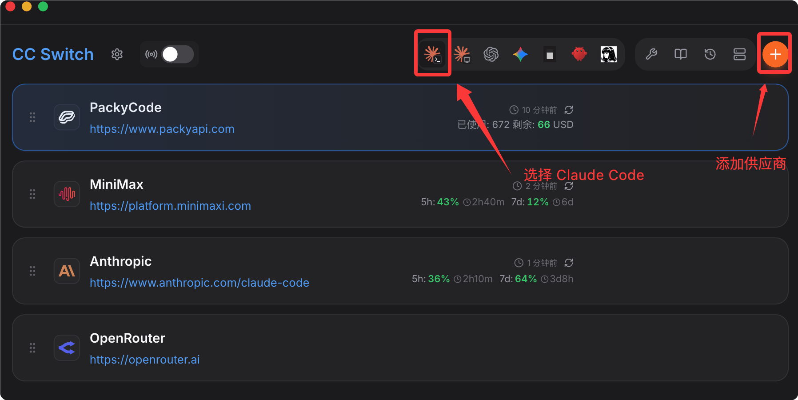
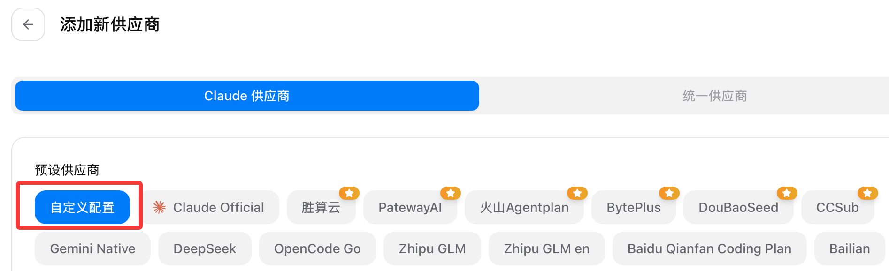
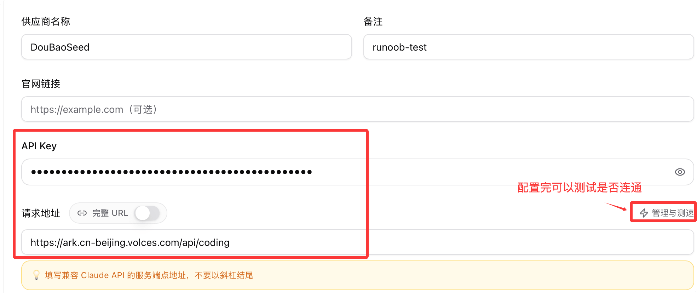
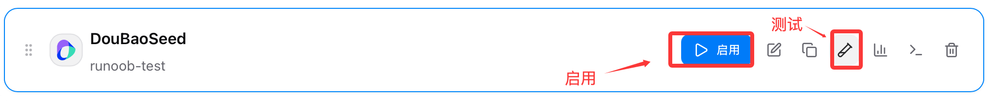
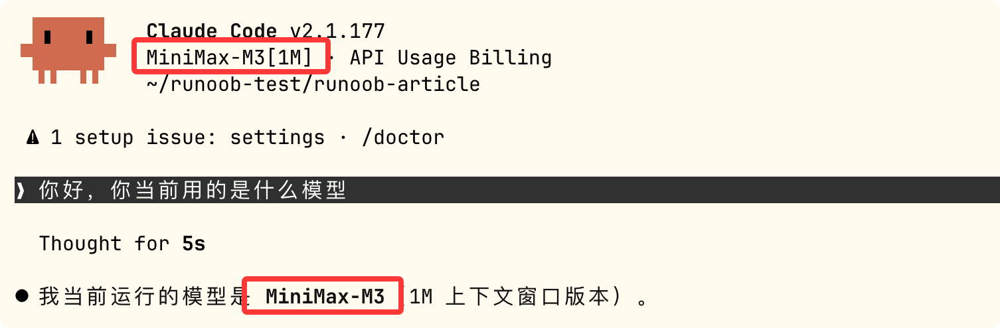

Claude Code でバイト方舟 Coding Plan を使用
バイト方舟 Coding Plan は、火山方舟が提供するAIプログラミングサブスクリプションサービスです。1つのプランで複数の主要なコード大規模言語モデルを併用でき、Cursor、Claude Code などの主要な開発ツールを統一的に接続できます。
マルチモデル全対応（バイト豆包を含む）
- バイト系：Doubao Seed Code、Doubao Seed 2.0、Doubao Embedding Vision
- 主要サードパーティ：DeepSeek V4、GLM-5.1、Kimi K2.6、MiniMax M3（100万の超長コンテキスト）
- 手動切り替えに対応、またはAutoスマートスケジューリング（簡単なタスクは軽量モデルでクォータを節約、複雑なタスクはフラッグシップモデルで効果を確保）
全ツール互換（1つのAPIキーで接続）
- エディタ：Cursor、Cline、Roo Code、Kilo Code
- ターミナル：Claude Code、OpenCode、OpenClaw、TRAE
- 一度の設定で、すべてのツールがプランのクォータを共有
2つのプランから選択（2026年6月期間限定75%オフ）
- Lite（日常開発）：元の価格40元/月、期間限定9.9元/月；5時間あたり上限1200回、月間上限18000回
- Pro（ヘビー開発/チーム）：元の価格200元/月、期間限定49.9元/月；5時間あたり上限6000回、月間上限90000回
Coding Plan/Agent Plan最初の2ヶ月は75%オフ
実施期間：2026.06.08-2026.08.07
購入が成功したら、クリックAPIキーを作成：

次に作成ボタンをクリック：

下の目のアイコンをクリックするとAPIキーを確認できます。使用するときにコピーすればOKです：

CC Switch の設定
次に、CC Switch を使って Claude Code で Qwen3.6 を無料で使用できるようにします。CC Switch は、Claude Code、Codex、Gemini CLI などのAIプログラミングアシスタントを統一的に管理するオープンソースのクロスプラットフォームデスクトップツールで、APIプロバイダー、モデル、設定をワンクリックで切り替えられます。
公式サイトからダウンロードできます：https://ccswitch.io/zh/。
GitHub Releases からもアクセスできます： https://github.com/farion1231/cc-switch/releases/latest各プラットフォームに対応するインストールパッケージをダウンロードします。
ウェブページの一番下にある「リソース」セクションまでスクロールし、各プラットフォームに対応するインストールパッケージをダウンロードします：

CC Switch をダウンロードしてインストールしたら、Claude Code を選択し、右上の「作成」ボタンをクリックします。

設定で「カスタム」を選択します：

APIキーとリクエストURLを入力します。Anthropic互換のリクエストURL：https://ark.cn-beijing.volces.com/api/coding
- OpenAI プロトコル互換：https://ark.cn-beijing.volces.com/api/coding/v3
- Anthropic インターフェースプロトコル互換：https://ark.cn-beijing.volces.com/api/coding

次に「詳細オプション」でモデルを設定します。対応モデルは Doubao、GLM、DeepSeek、Kimi、MiniMax などです：

例としてMiniMax-M3モデルを使います：

設定が完了したら、右下の保存ボタンをクリックします。メイン画面に戻ると設定した情報が表示されるので、設定が成功したかテストしてから有効化します：

有効化したら、コマンドラインでclaudeコマンドを使用して Claude Code を起動します：
claude
モデルが正常に設定され、使用できることを確認できます：

その他の拡張